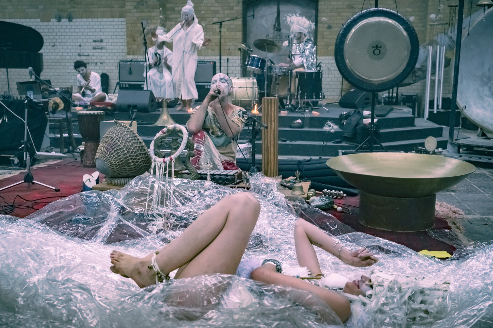
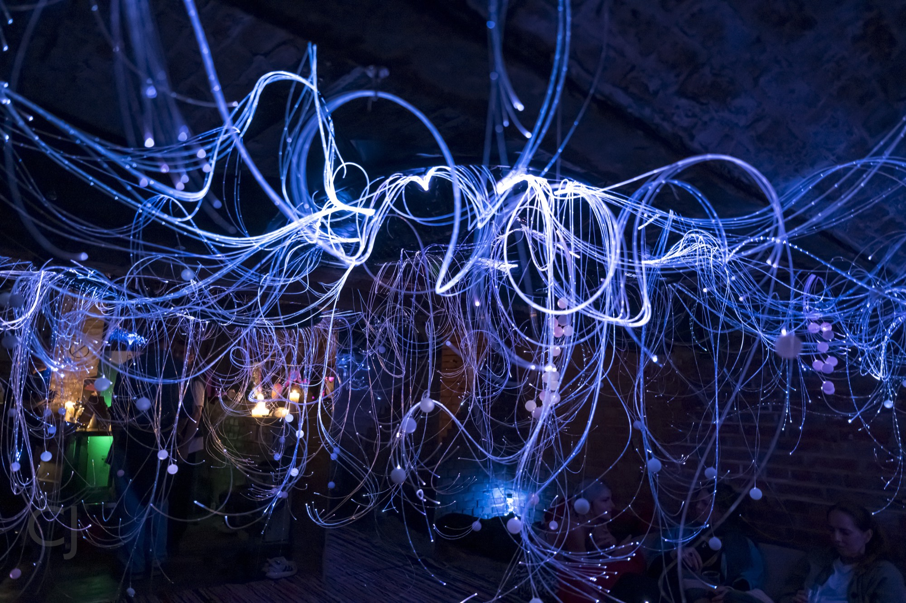

Fifty-two hours at MaHalla that bent closer to a retreat than a festival. Three weeks from the doors, a tight budget, a rare production. This is where it landed.
A paid campaign is usually called strong at a 3× return. This came back at 6.8×, in a three-week window. Ticket revenue runs through Resident Advisor and reflects the paid campaign working alongside organic reach and the event's own pull; we don't claim it all as ads. Every figure below is measured, not estimated.
Three weeks from the doors. A tight budget, and against it a rare production and a clear vision worth carrying. So almost all the real work happened before a single euro was spent: in strategy. Not how to shout louder, but how to make a little travel far: the right partners to carry it the last mile, content sourced and shaped from what was already in hand, and spend kept lean enough to last every one of those weeks.
Views are the summed total across MaHalla's own campaign posts, partner content excluded. Engagement is Meta-reported across the promoted posts. Follower figures compare the account at the start of the engagement (≈39,900) with today (41,343). This is the part that outlasts the event: an audience you own outright, and the one asset that makes every future campaign cheaper than this one.
Ticket sales only accelerated in the final days: the audience was still warming when the doors were already close. A real six-to-eight-week pre-promotion builds those warm pools before they're needed, so the next event opens from a materially larger, cheaper base rather than sprinting to build one from scratch. And if RA purchase tracking can be enabled from day one, every euro can be pointed at the people who actually buy, not just the people who click. That's the first thing we confirm before the next runway starts. Same craft, more room to work.
Three things, set before we engage: a fixed budget, planned against the runway and held, not changed in the final days, where cost climbs fastest; the full runway itself; and tracking live from day one. The numbers above are lowest exactly where the plan was followed. Lock those three and the next campaign starts ahead of this one, not behind it.

A 6.8x return came from a three-week test on a locked budget: strategy, live campaign management, and creative sourced and shaped in house. This is what Eachtra does compressed into three weeks. Imagine a real runway.
Talk to Eachtra →Figures reflect Meta Ads platform data (spend, clicks, ticket-page visits, cost efficiency) for the Sanctum of Sound campaign, and ticket counts and revenue as reported by Resident Advisor. Cost per click was €0.18 blended across the full campaign; cost per link click €0.22. Ticket outcomes reflect the blended effect of paid media, organic and the event's own promotion. Strategy, paid media and creative direction by Eachtra.